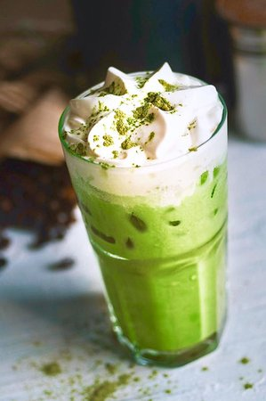
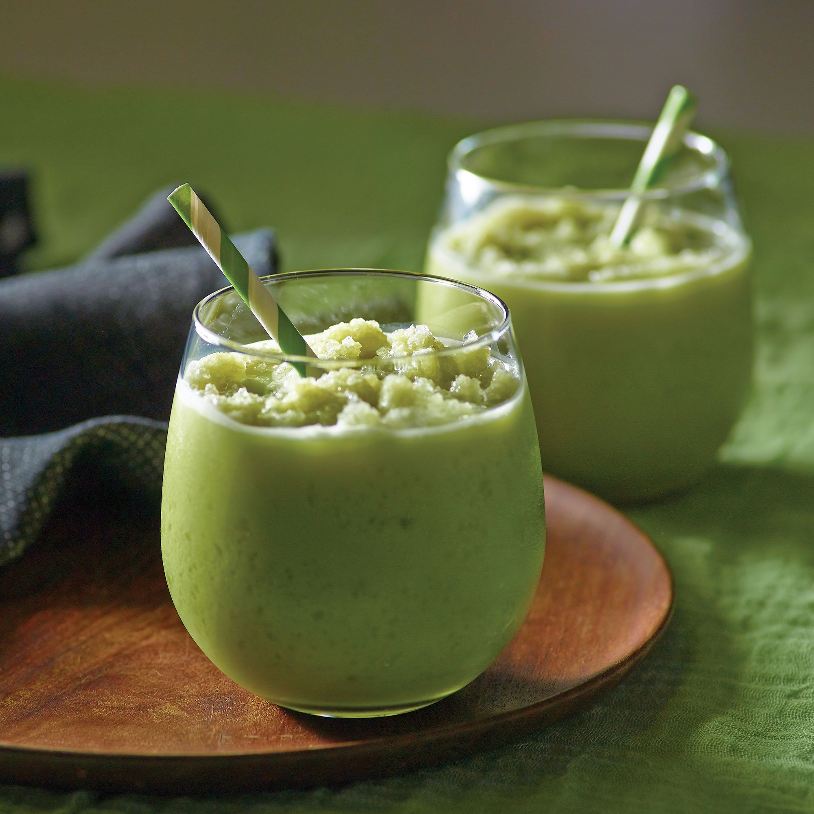
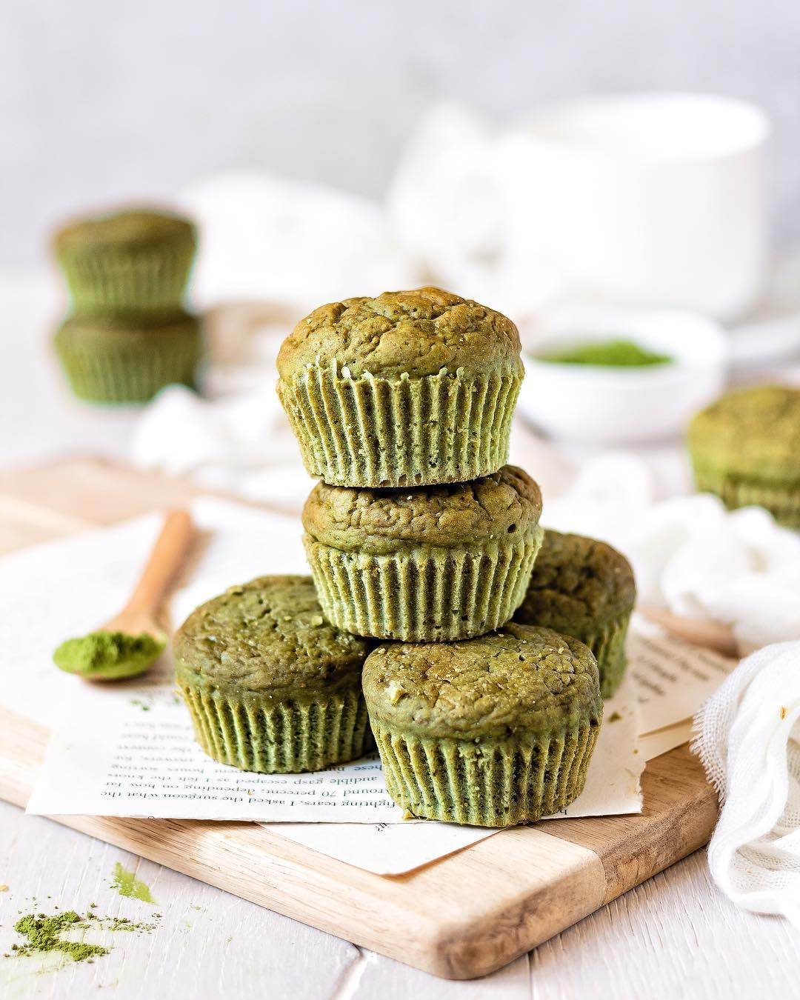
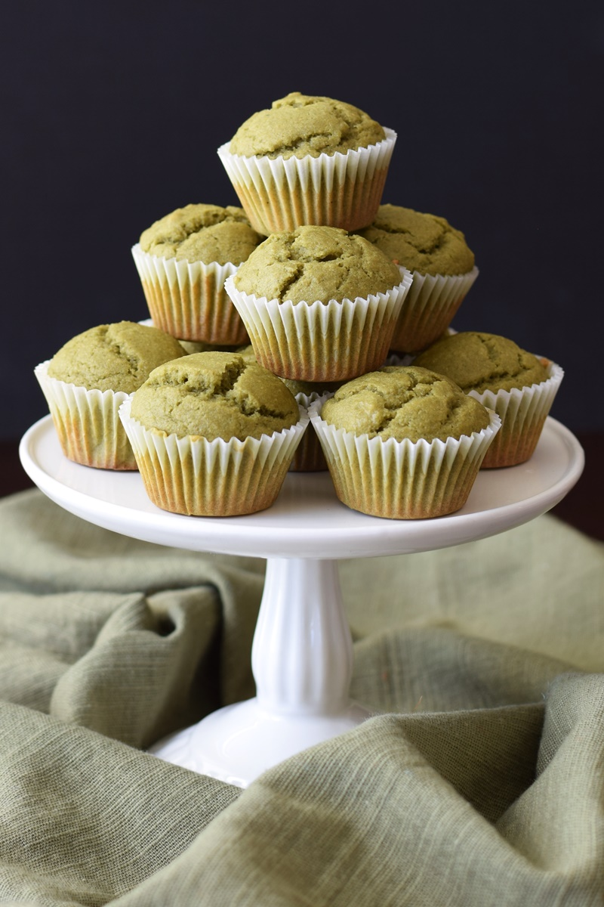

Haz matcha con una vida mas sana.
La Matcha es un ingrediente de la gastronomía tradicional China y Japonesa, que nos lleva a descubrir todo un nuevo mundo de beneficios por medio de la cocina.
La Matcha pasa por un proceso en el cual se cubren las hojas para retrasar su crecimiento, ganando aminoácidos y creando un sabor más dulce que seduce todos los sentidos. Una vez cosechadas las hojas se secan, se les retira el tallo, las venas y se muelen produciendo un polvo fino de color verde intenso.
Con una taza de Té de Matcha tienes la misma cantidad de antioxidantes que 10 tazas de Té verde. Es un alimento sano y natural.
Las propiedades del Té ayudan a mantener tu cuerpo saludable y joven, previniendo las enfermedades e imperfecciones de la piel; te da energía y vitalidad a tu cuerpo.
En Crepes & Waffles elegimos el mejor producto con la mejor calidad y así creamos para ti tres platos pensando en tu salud y en traer a tu mesa el mejor sabor:
Matcha Latte: Preparamos el té Matcha de forma cuidadosa, respetando su color, todos los sabores y propiedades de este delicioso ingrediente. Lo mezclamos con leche caliente y espumosa para darle esa cremosidad y así resaltamos su encantador sabor.

Frozen Matcha: Hicimos del Matcha una experiencia divertida y fresca. Nuestro frozen dulce y cremoso acompañado de crema chantilly y helado de vainilla es la combinación perfecta para una explosiva sensación de sabores en el paladar.
 
Muffin de Matcha: Para iniciar el día horneamos diariamente en nuestros hornos un panqué esponjoso y suave que realza de forma sana y dulce lo mejor del Matcha, su sabor natural.
 
Haz Matcha con una vida sana y descubre un nuevo mundo de sabores con este increíble ingrediente que ahora hace parte de nuestros platos para conquistar tu corazón.